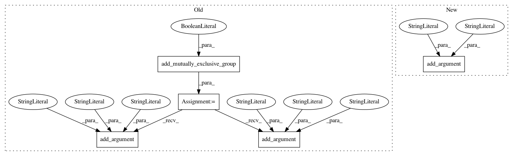

091ef6b351dc8ee1a3052f9b8093f774e055a3d6,src/sos/__main__.py,,get_remote_parser,#Any#,735
Before Change
description="""Listing and testing remote configurations""")
if desc_only:
return parser
grp = parser.add_mutually_exclusive_group(required=True)
grp.add_argument("-l", "--list", nargs="*", metavar="hosts",
help="""List information of all or specified remote hosts""")
grp.add_argument("-t", "--test", nargs="*", metavar="hosts",
help="""Test the usability of all or specified remote hosts""")
grp.add_argument("-s", "--status", nargs="*", metavar="hosts",
help="""List status of tasks on specified or all remote hosts""")
parser.add_argument("-c", "--config", help="""A configuration file with host
definitions, in case the definitions are not defined in global sos config.yml files.""")
parser.add_argument("-v", "--verbosity", type=int, choices=range(5), default=2,
help="""Output error (0), warning (1), info (2), debug (3) and trace (4)
After Change
description="""Listing and testing remote configurations""")
if desc_only:
return parser
parser.add_argument("action", choices=["test", "status", "list"],
help="""List, check status, or test configuration of all or specified remote hosts""")
parser.add_argument("hosts", nargs="*", metavar="hosts",
help="""Hosts to be checked or tested. All hosts will be included if unspecified.""")
parser.add_argument("-c", "--config", help="""A configuration file with host
definitions, in case the definitions are not defined in global sos config.yml files.""")
In pattern: SUPERPATTERN
Frequency: 3
Non-data size: 5
Instances
Project Name: vatlab/SoS
Commit Name: 091ef6b351dc8ee1a3052f9b8093f774e055a3d6
Time: 2018-05-11
Author: ben.bog@gmail.com
File Name: src/sos/__main__.py
Class Name:
Method Name: get_remote_parser
Project Name: facebookresearch/ParlAI
Commit Name: 477da811db10bf2976d9a10f345b836d02e7d1c0
Time: 2017-12-22
Author: kshuster@fb.com
File Name: examples/build_pytorch_data.py
Class Name:
Method Name: main
Project Name: dmlc/gluon-nlp
Commit Name: aeb516494daa207720b428072ab49eeea7bfff75
Time: 2019-06-13
Author: xshiab@ust.hk
File Name: scripts/text_generation/sequence_sampling.py
Class Name:
Method Name: